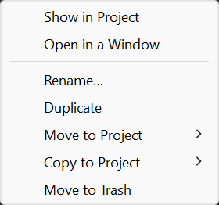

The asset menu
The asset menu acts on the selected assets. It opens from a right-click on The Forge's list, and from the ⋮ in an inspector's header, which adds the asset's own items (The header).

The asset menu, from a right-click on an asset in The Forge's list.
| Item | What it does |
|---|---|
| Show in Project | Selects the asset in the Project window. |
| Open in a Window | Shows its inspector in a window of its own. |
| Rename… | Asks for its new name (Renaming, duplicating and deleting). |
| Duplicate | Makes a copy beside it, and shows the copy. The copy is named as a copy, such as "Fireball Copy", with the tag that name gives. |
| Move to Project, Copy to Project | Move or copy every selected asset into another Forge Project, each into its type's folder there. |
| Move to Trash | Moves every selected asset to the trash, asking first. |
Move to Project, Copy to Project and Move to Trash act on every selected asset. The others act on the first selected asset.